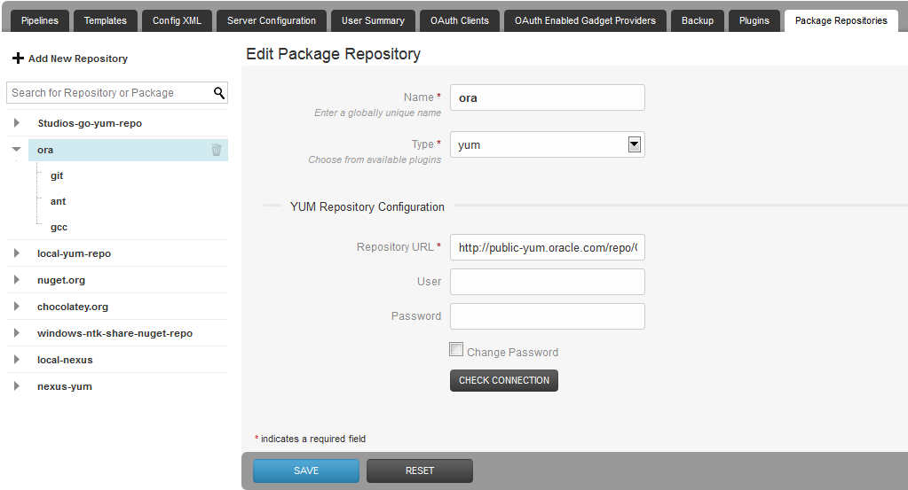
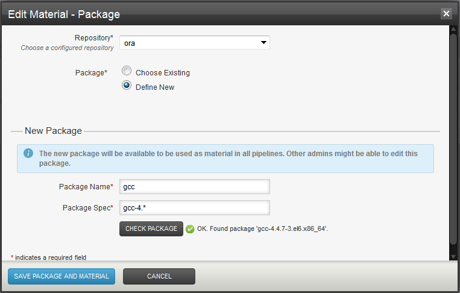
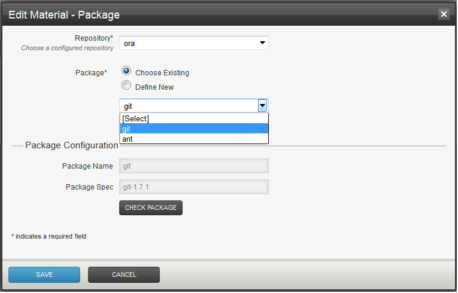
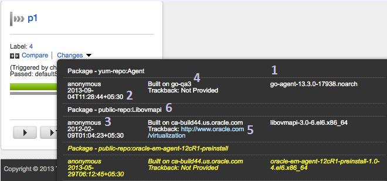

Poll from Go packages and more from Go 13.3 onwards Pipelines in Go can poll packages in repositories similar to how they poll version control systems. A build typically consumes source code maintained in a version control system (VCS/SCM). What about a typical deployment? Increasingly, the input for deployments is the build result packaged as:
These files (packages) are often maintained in corresponding package repositories. Such packages may be specified as materials for Go pipelines.
Since there are many package formats each with its own package manager and repository, the support for package-as-material has been implemented as an extension point. Using the bundled yum-repo-poller plugin, it is possible to specify an rpm package held in a yum repository as a material for a Go pipeline. Using other external plugins, it is possible to do the same for other types of packages.
A repository may contain one or more packages. A pipeline may refer to a package as a material. When the package is updated in the respository, interested pipelines will get scheduled.
A package material plugin lets pipeline group admins provide details of the corresponding repository type to Go. e.g. here is how we define a yum repository using the bundled yum-repo-poller plugin.

A package material plugin also lets you define packages at the time of pipeline material configuration (Admin > Material >Add Material > Package). Here is what it looks like for defining RPM packages with the bundled yum plugin. The package name is not used by the package material plugin - it is used by Go to construct the material name. Two packages in a repository cannot have the same name. Use the check package button to ensure that the package definition does indeed resolve to the package you are looking for.

Unlike other VCS/SCM materials, the material definition in case of packages is not contained within the pipeline definition. Many pipelines may have material definitions refering to the same package. Here is how we associate an existing package as material for a pipeline.

Each package definition must resolve to exactly one package on the respository, else the pipeline will not run. In order to set up a pipeline that polls for multiple packages, configure each package as a separate material.
Each package material plugin defines a subset of its properties as a package fingerprint. e.g. in case of the bundled yum plugin this subset consists of Repository URL and Package Spec (it excludes repository username and password). Repository and Package names are not part of package fingerprint. It is not permitted to multiple packages having the same package fingerprint. An attempt to do so will result in an error message like this:
The following error(s) need to be resolved in order to perform this action:
Cannot save package or repo, found duplicate packages. [Repo Name: 'orchard', Package Name: 'apple'], [Repo Name: 'orchard', Package Name: 'orange']
Here is a XML view of an RPM package defintion. Note the relation between repository, package and pipeline material. Loosely typed property, key and value tags are used for repository and package configuration in order to accommodate different plugins. If you choose to configure via direct XML edit, note that it isn't necessary to provide repository and package IDs, Go server wil autogenerate them. However, not all validations that are performed while configuring via UI kick in while configuring via XML edit - the resulting failures will show up later in the server health message panel at the bottom right of the browser frame.
<repository id="1ce5c205-977f-4c0e-ada4-882030580eed" name="ora">
<pluginConfiguration id="yum" version="1" />
<configuration>
<property>
<key>REPO_URL</key>
<value>http://public-yum.oracle.com/repo/OracleLinux/OL6/latest/x86_64</value>
</property>
</configuration>
<packages>
<package id="840b0b60-bd29-489d-b5ea-ccff5f6459a9" name="gcc" autoUpdate="false">
<configuration>
<property>
<key>PACKAGE_SPEC</key>
<value>gcc-4.*</value>
</property>
</configuration>
</package>
</packages>
</repository>
...
<pipelines group="showcase">
<pipeline name="dependsOnGcc">
<materials>
<package ref="840b0b60-bd29-489d-b5ea-ccff5f6459a9" />
</materials>
...
Depending on whether Go is also publishing the package or just consuming it, there are two options for modeling a value stream that includes packages.
The first scenario is where the package is published from some pipeline in Go. Say pipeline X publishes package P to an external repo and pipeline Y consumes P. To trigger Y after publication of P, there are two options:
It isn't advisable to do both as Y will then schedule twice. The choice depends on how closely the activities in pipeline X and Y are related. If it is important to see X and Y together in the same value stream map, then option #1 makes sense.
Repositories and their packages are global entities not tied to a pipeline group or environment. Pipeline group admins may define repositories and packages for use in their pipelines. One pipeline group admin may also use packages defined by another for their pipelines. Changing a package definition will cause all dependent pipelines to schedule - even those not in the same pipeline group as that of the person editing. Because of this, we don't have a UI way of changing the definition of a package. Only the Go admin can change it via Admin > Config XML tab.
Even if no pipelines use a package, Go polls for newer packages every minute. This may be turned off at a package level by setting autoUpdate to false via the config xml (Go admins only). autoUpdate is turned on by default. When a newer package is found, the pipelines for which it is a material get scheduled (assuming auto scheduling of pipelines is on). Also see API scheduling.
The following information is expected from the package material plugin (which in turn obtains it from the package metadata if available)
At the time of building the package, it is recommended to include as much of the above information as possible so that it is available for Go to display as below.

The package isn't automatically downloaded on the agent and made available to the jobs. This is unlike VCS/SCM materials where a checkout is made by default. In case of packages, the Go Agent is typically not the target node for deployment, it is only orchestrating deployment to a remote node. So, instead of an automatic download, the following environment variables are made available:
Repository and package names are converted to all uppercase and hyphens are converted to underscores before inclusion in the environment variable names. For example, let's say we set up a repository named ORA pointing to http://public-yum.oracle.com/repo/OracleLinux/OL6/latest/x86_64 and define a package gcc with a spec of gcc-4.* and set it up as material for a pipeline. To download the package locally on the agent, we could write a task like this:
[go] Start to execute task: <exec command="/bin/bash" >
<arg>-c</arg>
<arg>curl -o /tmp/gcc.rpm $GO_PACKAGE_ORA_GCC_LOCATION</arg>
</exec>
When the task executes on the agent, the environment variables get subsituted as below:
[go] Start to execute task: <exec command="/bin/bash" >
<arg>-c</arg>
<arg>curl -o /tmp/gcc.rpm $GO_PACKAGE_ORA_GCC_LOCATION</arg>
</exec>.
...
[go] setting environment variable 'GO_PACKAGE_ORA_GCC_LABEL' to value 'gcc-4.4.7-3.el6.x86_64'
[go] setting environment variable 'GO_REPO_ORA_GCC_REPO_URL' to value 'http://public-yum.oracle.com/repo/OracleLinux/OL6/latest/x86_64'
[go] setting environment variable 'GO_PACKAGE_ORA_GCC_PACKAGE_SPEC' to value 'gcc-4.*'
[go] setting environment variable 'GO_PACKAGE_ORA_GCC_LOCATION' to value 'http://public-yum.oracle.com/repo/OracleLinux/OL6/latest/x86_64/getPackage/gcc-4.4.7-3.el6.x86_64.rpm'
...
Or, to simply pass it as an argument to a deploy script on a remote server
<exec command="/bin/bash">
<arg>-c</arg>
<arg>ssh server "cd /to/dest/dir;deploy.sh $GO_PACKAGE_ORA_GCC_LOCATION"</arg>
</exec>
Also see Installing RPMs
Important: Please note that if you change repository credentials and then try to re-trigger (redeploy) an old package, the published environment variables will not reflect new credentials.
At the moment, Go does not create or publish the package for you. But it is simple enough for each type of package. e.g. rpm
You could also explore the command repository on GitHub for helpful commands. What is command repository? Please see this.
Please note that Go does not support any sort of automatic polling or other support for package dependencies. Each package dependency has to specified as a separate material if needed. Alternatively, just poll for the packages at the root of the dependency graph and let the package manager figure out the rest at the time of installation. e.g. if componentA-1.2.0-b234-noarch.rpm depends on componentB-2.3.0 or above, simply poll for componentA and let
yum install componentA-1.2.0-b234-noarch
do the resolution of componentB for you.